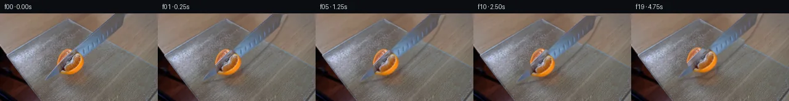

![首帧]()

Round 00
2026-11-04T22:16:25.741241+00:00像素候选变化代码 +217/−0inspection 更新
pixels 207abe9ef64ec929 · code 216699fb68536462
查看本轮 generate.py 真实 diff
--- previous/generate.py
+++ current/generate.py
@@ -0,0 +1,217 @@
+#!/usr/bin/env python3
+"""Generate a 20-frame local-pixel continuation of the tangerine slice."""
+
+from pathlib import Path
+
+import cv2
+import numpy as np
+from PIL import Image, ImageDraw
+
+from artifact_io import save
+
+
+ROOT = Path(__file__).resolve().parent
+W, H = 256, 144
+
+
+def polygon_mask(points):
+ mask = np.zeros((H, W), np.uint8)
+ cv2.fillPoly(mask, [np.asarray(points, np.int32)], 255)
+ return mask
+
+
+def soften(mask, radius=0.65):
+ a = mask.astype(np.float32) / 255.0
+ if radius > 0:
+ a = cv2.GaussianBlur(a, (0, 0), radius)
+ return np.clip(a, 0.0, 1.0)
+
+
+def warp(arr, dx, dy, interpolation=cv2.INTER_LINEAR):
+ matrix = np.float32([[1, 0, dx], [0, 1, dy]])
+ return cv2.warpAffine(
+ arr,
+ matrix,
+ (W, H),
+ flags=interpolation,
+ borderMode=cv2.BORDER_CONSTANT,
+ borderValue=0,
+ )
+
+
+def composite(dst, rgb, alpha):
+ a = np.clip(alpha, 0, 1)[..., None]
+ return dst * (1.0 - a) + rgb.astype(np.float32) * a
+
+
+def shifted_sprite(dst, rgb, alpha, dx, dy):
+ moved_rgb = warp(rgb, dx, dy)
+ moved_alpha = warp(alpha, dx, dy)
+ return composite(dst, moved_rgb, moved_alpha)
+
+
+def make_fruit_mask(source):
+ """Colour-assisted convex silhouette, restricted to the measured fruit ROI."""
+ hsv = cv2.cvtColor(source, cv2.COLOR_RGB2HSV)
+ yy, xx = np.mgrid[:H, :W]
+ roi = ((xx - 114.0) / 25.0) ** 2 + ((yy - 81.0) / 24.0) ** 2 <= 1.0
+ orange = (
+ (hsv[..., 0] >= 2)
+ & (hsv[..., 0] <= 27)
+ & (hsv[..., 1] >= 75)
+ & (hsv[..., 2] >= 55)
+ & roi
+ )
+ # The orange peel defines the exterior; a hull naturally includes flesh/pith.
+ ys, xs = np.nonzero(orange)
+ points = np.column_stack((xs, ys)).astype(np.int32)
+ hull = cv2.convexHull(points)
+ mask = np.zeros((H, W), np.uint8)
+ cv2.fillConvexPoly(mask, hull, 255)
+ # Trim the hull to the observed asymmetric outline.
+ trim = polygon_mask([(91, 78), (98, 62), (109, 56), (126, 61),
+ (139, 77), (134, 96), (120, 103), (99, 99)])
+ return cv2.bitwise_and(mask, trim)
+
+
+def make_transition_check(frames):
+ """Contact sheet of four adjacent-frame transitions and amplified differences."""
+ pairs = [(0, 1), (6, 7), (12, 13), (18, 19)]
+ sheet = Image.new("RGB", (W * 3, (H + 20) * len(pairs)), (24, 27, 33))
+ draw = ImageDraw.Draw(sheet)
+ for row, (a, b) in enumerate(pairs):
+ y = row * (H + 20)
+ diff = np.abs(frames[b].astype(np.int16) - frames[a].astype(np.int16))
+ diff = np.clip(diff * 5, 0, 255).astype(np.uint8)
+ sheet.paste(Image.fromarray(frames[a]), (0, y + 20))
+ sheet.paste(Image.fromarray(frames[b]), (W, y + 20))
… diff truncated; 130 more lines …